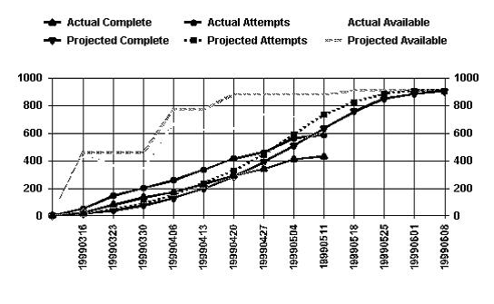
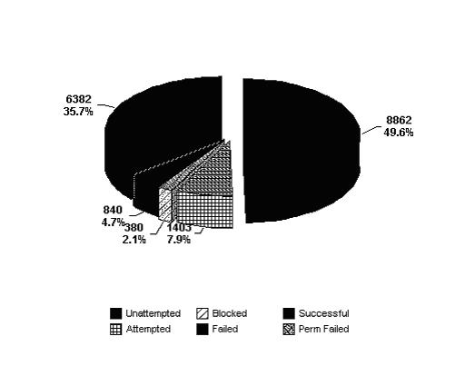
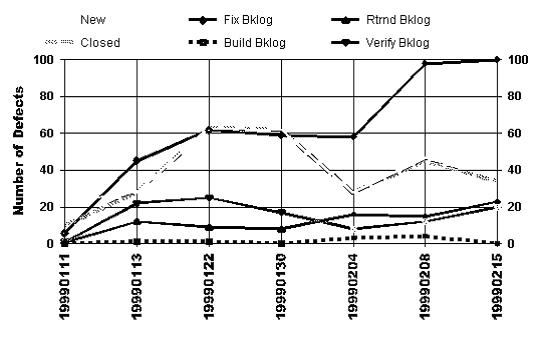
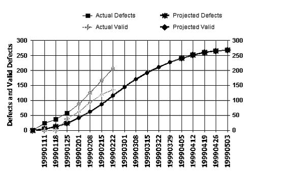
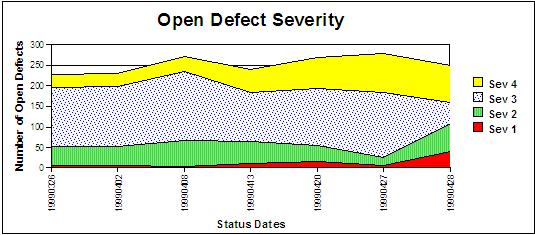

Most tool produced test reports have design capabilities that should be carefully implemented to meet the needs of this
particular project and the organizational standards.
Note: Some of the conclusions that can be drawn from the analysis in this example are:
1. There are not as many tests available (Successful + PermFailed + Attempted + Unattempted) as expected
2. A large number of fixes are backlogged
3. The number of defects found is greater than projected, though only a small number of these have been deemed valid
defects
4. Sev 1 defects have risen dramatically recently (or there are a large number of these that are still open, it is not
clear)
Source: From Test Tracking Tool (IBM Notes App) Sample Status Database
Sample Test Status Report
Test Status Report for 02/22/99
Name of Test Effort: Xxx R8
Test Phase: SVT
Test Platform: MVS/ESA
Technical Lead:
Owning Manager:
Behind Schedule by 2 days as of 02/22/99
(6482 of 20000 claimed, 32% Complete)
Line Chart for Actuals versus Projected for Xxx R8 test effort, SVT phase, MVS/ESA platform

Complete = Successful + PermFailed
Attempts = Successful + PermFailed + Attempted + Failed
Available = Successful + PermFailed + Attempted + Unattempted
Test Start Date: 19990310
Status Dates
|
Projected Complete
|
Projected Attempts
|
Projected Available
|
Actual Dates
|
Actual Complete
|
Actual Attempts
|
Actual Available
|
19990316
19990323
19990330
19990406
19990413
19990420
19990427
19990504
19990511
19990518
19990525
19990601
19990608
|
15
38
75
128
196
284
391
509
636
758
850
886
908
|
15
46
89
150
237
329
444
591
733
826
885
908
908
|
457
457
457
771
771
880
880
880
880
908
908
908
908
|
19990316
19990323
19990330
19990406
19990413
19990420
19990427
19990504
19990505
|
21
82
132
173
230
291
341
410
432
|
54
144
204
258
334
415
462
562
587
|
440
370
342
668
623
634
738
723
712
|
Pie Chart for test case status breakdown for Xxx R8 test effort, SVT phase, MVS/ESA platform

Line Chart for Defect status breakdown for Xxx R8 test effort, SVT phase, MVS/ESA platform

Date
|
Fix Backlog
|
Build Backlog
|
Returned Backlog
|
Verify Backlog
|
New
|
Canceled/ Closed
|
19990111
19990113
19990122
19990130
19990204
19990208
19990215
|
6
45
62
59
58
98
100
|
0
1
1
0
3
4
0
|
1
12
9
8
16
15
23
|
1
22
25
17
8
12
20
|
23
28
63
62
28
47
41
|
10
28
63
62
28
45
34
|
Line Chart for Total Defects: Discovered & Valid for Xxx R8 test effort, SVT phase, MVS/ESA platform

Projected Dates
|
Projected Defects
|
Projected Valid
|
Actual Dates
|
Actual Defects
|
Actual Valid
|
19990111
19990118
19990125
19990201
19990208
19990215
19990222
19990301
19990308
19990315
19990322
19990329
19990405
19990412
19990419
19990426
19990503
|
4
12
24
42
63
87
116
145
171
193
212
228
241
252
261
265
268
|
4
12
24
42
63
87
116
145
171
193
212
228
241
252
261
265
268
|
19990111
19990118
19990125
19990201
19990208
19990215
19990222
|
23
37
58
87
125
166
207
|
0
0
38
61
93
119
135
|
Area Chart of Open Defect Severity: for Xxx R8 test effort, SVT phase, MVS/ESA platform

Status Dates
|
Sev 1
|
Sev 2
|
Sev 3
|
Sev 4
|
19990326
19990402
19990408
19990413
19990420
19990427
19990428
|
8
5
4
10
15
5
40
|
45
49
64
55
40
20
70
|
144
147
168
120
140
160
50
|
31
30
35
55
75
95
90
|
Doc Link to the System Test Profile contained in the Interop Test Matrix Database
List of Open Hot Problems and Concerns
List of Open Action Items
|